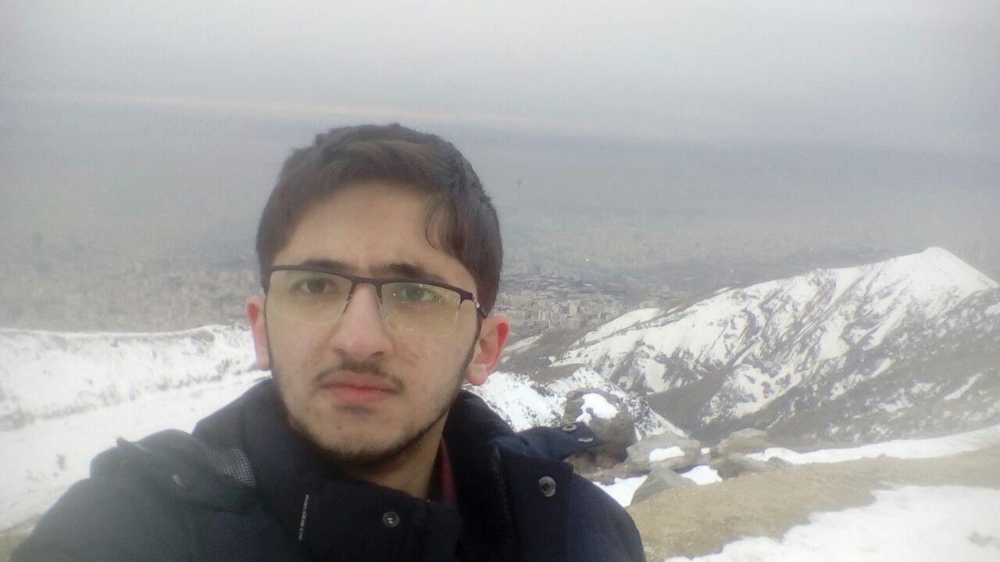

|  | حمیدرضا کلباسی دانشجوی مهندسی کامپیوتر
|
تا دانشگاه شروع بشه بیکارم.
وقت اضافم رو روی اینا می زارم:
توی مدرسه خودمون به دهما گراف می گم.
| GeoCoq | کد استایل من | بات آزمون گیر تلگرام |
| eslint-plugin-toplevel | web-component-factory | ویکی شاززز |
| zfc-coq |
من معتقدم که خدایی جز الله، خدای بخشنده مهربان نیست و معتقدم محمد بنده و پیامبر او است و معتقدم علی و فرزندانش سرپرستان خدا بر روی زمین هستند.
دین علت فعالیت من حتی در کار های عادی مثل غذا خوردن یا بازی کردن است. ( در حالت آرمانی؛ در حالت عادی من ممکن است اشتباه کنم )
من از بحث کردن در هر زمینه ای، از جمله این زمینه خوشحال می شوم. من از روی منطق و شواهد موجود تصمیم می گیرم و می توانم با هر کس که مثل من تصمیم می گیرد، مشاهداتمان را با هم ترکیب کنیم و اشتباهات منطقی یک دیگر را برطرف کنیم. این بحث لزوما به قانع شدن یکی از طرفین نمی انجامد اما وضعیت بهتری به وجود می آورد.
من مخالف سرمایه داری به معنی حق داشتن سرمایه نیستم اما مخالف سرمایه محوری به معنی محور بودن پول و سرمایه در کار ها هستم. چیزی که امروزه به عنوان سیستم سرمایه داری شناخته می شود همان سرمایه محوری است و من با آن مخالفم. (بیشتر ببینید)
اما من مخالف اقدام قهری علیه کمپانی ها هستم. من موافق مالکیت خصوصی هستم و گرفتن اموال کمپانی ها از آن ها، بی عدالتی علیه آن هاست. من برای مبارزه با کمپانی ها این کار را می کنم.
زبان برنامه نویسی مورد علاقه من جاوا اسکریپت است. (دلیل)
من زبان های فانکشنال خالص را نیز دوست دارم.
من زبان های بدون تایپ سیستم را بیشتر دوست دارم. (دلیل)
من سعی می کنم حتی المقدور از نرم افزار های آزاد استفاده کنم. (برنامه هایی که من استفاده می کنم را ببینید) به دلایل زیر:
همچنین من اکیدا سعی می کنم که از هرگونه مشارکت در تولید محتوای انحصاری و غیر آزاد خودداری کنم. (دلیل) این محتوا می تواند اعم از برنامه، کتاب، فیلم، موسیقی، مقاله، اسلاید و امثالهم باشد. اگر دیدید که روزی من از این موضوع تخطی کردم، خوشحال می شوم که به من یادآوری کنید.